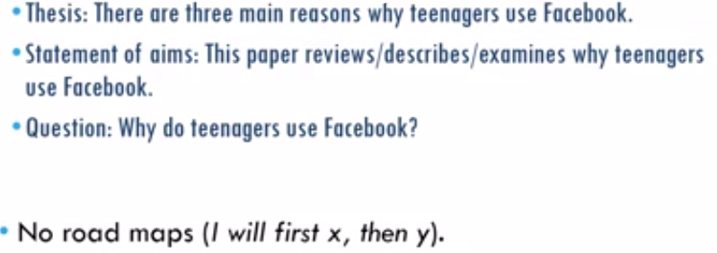

Academic Writing
Table of Contents
1 Academic Style
formality, use of academic phrases.
1.1 Characteristics of academic texts
1.1.1 over all
- standard structure, conventionalized
- References
- Boring layout
- Formal language; no errors, complete sentences and well considered arguments
- Objective and factual;
there could be personal opinion, but the way these opinions are presented is impersonally E.g. instead of I think this is ridiculous it would be this does not seem the right conclusion
1.2 In academic writing style:
- references have to be made
- often a lot of uncertainties are present; could mean, this might be the solution etc.
- the phrases: prof. X states that.. not "…", he says.
- Common problem words practice here
1.3 Don'ts
Here's a list of things that should be avoided in order to get a passing level in AW.
- Verb contractions; i.e. won't, hasn't, can't, etc.
- beware of the differences between verb contractions and possessive forms: e.g. hasan's proposal for innovation
- YOU: never use in AW.
- informal, too direct, which might seem impolite.
- you is too vague: who is you?
- avoid you by writing sentences in passive forms or simply by less personal and more suitable forms.
- we: same as for you. Be specific as much as possible.
- Fragments: no proper subjects or verbs
- aggressive punctuation:
- certain punctuation might seem emotional(e.g. !). ! should never be used in AW.
- and a ? poses a direct dialogue; not forbidden, but should be used conservatively.
- also see this
1.4 Do's
try to replace fague words with more formal and precise ones.

- use verbs describing aims: so not look at but investigate, aim, examine….
- reporting verbs: to explain what someone's said.
- not says, but discusses, argues, proposes….
- phrasal words: these are two-word verbs.
- put off - postpone.
- look into - investigate.
- come across - discover.
- impersonalized your personal views
- instead of: I think this is (not) the best solution. =>
- Clearly, this solution provides the best option for…
- Not surprisingly, many critics have concluded that…
- it is likely that…
- it is clear that…
- standard academic phrases: this is a very helpful tool that has many categories of verbs usage; Manchester phrasebank
- don't overdo it.
- it doesn't have to be as legal language and too complicated
2 Quoting
referring and avoiding plagiarism.
2.1 why to refer to other articles?
- to explain what we know about the topic; summary of the topic(ie what other have done)
- quote reporting verbs that are of importance; provide, offer, have been done, have studied
- to use as a starting point for a discussion or experiment.
- to give definitions and facts; to show that you(ie researcher) have the data and references and you didn't made things up.
2.2 in which parts of the text do you refer to other articles
general basic/standard format of academic texts; see Structure:
2.3 how do you refer to other articles?
referring to articles should be made easy for people to find them. general referencing style:
- in-text references; ex
- referring; IEEE style: [1] or Harvard style: (NAMEOFAUTHOR YEAR) - common in introduction
- paraphrasing where the author is part of the sentence; Smith (2013) concludes … - quite common and you can go into details if needed.
- change the diction of the original text; but not the keywords(ie authors' names etc)
- change the structure; ex sentence order
- keep the meaning
- quoting; Smith (2013) says that "…" - going in more details. General facts about a topic don't yhave to be quoted.
bibliography; what info you need to find in a book or article? - with page #s and authors' names
is meant pre-internet times.
2.4 Academic research/papers
- always start with introduction, literature review(previous work or background) and then their work.
3 Structure
introduction, thesis statement and paragraph statement. There is a basic/standard format of academic texts:
3.1 I introduction
The introduction offers the first impression to the readers, it explains what the content of the paper is, and why the work has been done. After reading the introduction, a reader decides whether they want to proceed reading the paper or not.
3.1.1 how do you start?
- a simple starting sentence about the topic; e.g. Research in the area of smart environment has gained popularity over the last decade
- no thorough explanation about the paper, however it provides an idea of the general, discussed topic
- another example should also give a sense to the reader so that they might have interest or not; e.g. the game of poker presents serious challenge in AI research.
- starting with an academic sentence can be boring; so this should be kept in mind; be interesting.
3.1.2 what goes in the middle?
the length of the introduction depends on the length of the text.
- more info about the research
- a background information can be given
- some topics that other people are working on.
- then the ending sentence
3.1.3 how do you end?
The ending sentence of the introduction is important, as the previous sentences prepare for it; aka thesis statement. Can have a type of question, road map or a statement of aims
- it should focus on what the paper does and what the user should expect.
- it points on a particular aspect of which the introduction sentence provided.
- the verbs indicate the type of the paper; e.g. In this paper, we describe the problem of in-home interventions….; so here know this paper provides a description of the problem.
- or we present a general ….; it's then known that the paper is providing some sort of solution to a given problem.
- or it can contain a combination of verbs that introduce what can be expected; see the slides of lecture 5 > 2nd part; how do you end?
3.1.4 quiz:
- first sentence? provides a general idea of what the paper is about, and tries to interest the reader.
- why thesis statement is important because it summarizes what will be discussed in the paper and the type of paper will be.
- funnel/inverted pyramid? it means that you start with information in general, about the subject to smooth the way to the thesis statement; which is more specific.
3.2 M methods;
present your methods, you might not have references, unless yours based on done methods
3.3 R results/experiment section;
usually don't have many references; since here you describe the results and experiments of your research.
3.4 a
3.5 D discussion + Conclusion;
you mainly return to the referred studies mentioned in the introduction; so can be less precise.
3.5.1 how do you start?
What important is, is that you have to signal to the reader that this is a recap of the thesis statement. Using the present perfect tense is significant since it shows that you've started the conclusion looking backward.
- the conclusion statement resembles the one of the thesis statement.
- while the thesis statement introduces, ie looks forward, in the conclusion your sentence(s) should look backward. In the sense of reviewing/reminding what has been done in the paper.
- the tense matters in the conclusion; e.g. In this paper, we have introduced…
- indicating that we has been done is all in the text prior to this conclusion.
3.5.2 what goes in the middle?
the length of the conclusion depends on the length of the text and can vary a lot; can be one paragraph or more.
- here the main conclusion; could be a proposal, limitations or summary.
- you should in the final assignment, think about what is suitable for the review; since it's only 200 words!
- you should be as specific as possible.
- make sure you connect what the body paragraph
- without repeating elements
- one or more sentence should provide sort of an answer to the thesis statement.
- talk about implications; what is known in the paper; don't make claims too big.
- talk about further research; if relevant. And be specific.
3.5.3 how do you end?
The final sentence should remind the reader of what your paper is about so what they can take home. Useful links
- n Dutch academic papers the final sentence of the conclusion is compared to a bouncer; since there where the reader is after reading the paper.
- it can end with future plans
3.5.4 quiz
- what should you do in the first sentence of the conclusion?
- it should reflect on the thesis sentence and reminds the reader of what this paper was about.
- what should you r conclusion in any case contain?
- a description of what the paper was about; i.e. connection with the body paragraph, and some sort of summary of what you've discussed. And it should contains an answer to the research statement.
- give two other components that you can include in the conclusion.
- discuss implications of the body paragraph and summarize main points, and maybe point out to future research or limitations.
3.6 and punctuation
Here's a list of different punctuation, and here's a link to their rules
3.6.1 .
Is used for a full stop. With keeping in mind it needs to come after a complete statement; you have to be on time . Because that is the rule
3.6.2 ,
- it separates two parts of a sentence.
- In some cases, it shouldn't
- the subject and verb.
- the verb and object.
- whereas in some other cases it's necessary to use it and some it's not.
- However, the decision is not always easy.
- In the summer of 1995(,) we went to Paris.
- After a small pause, he decided he would come with us.
- it cannot separate two sentences
it was cold, it was raining
3.6.3 :
- announces or introduces
- what comes before it needs to be complete
the options are: x and y.- but the options are as follows: x and y
3.6.4 ;
here's a good illustration of the rules of when to use semicolon
3.6.5 ?
should not be used in essays; max 1
3.6.6 !
should never be used in essays
3.6.7 ’
apostrophe: shouldn't be used for contractions, or plurals. Should be used to show possession
4 Linguistic Accuracy
grammar, vocabulary and punctuation
5 Clarity of Formulation
linking language and clauses combining
6 Paragraphs
6.1 what is a paragraph?
- a unit of a text that's recognizable; in terms of layout and argumentation.
- in each paragraph the writer discusses certain topic, and moving from one to the other represent the transition between topics.
6.1.1 layout
- each paragraph starts with a tab; indentation.
- first sentence is the topic sentence; which is the main theme/goal of the paragraph.
- rest of the paragraph provides the argumentation, examples or evidence of the topic sentence.
6.2 why?
- to no overwhelm the reader
- the writer breaks down their idea into several paragraphs to make it easier to read
- as a result the reader stays well informed of the topic the writer is conveying.
- e.g. after introducing a topic in the topic sentence, then the writer explains more about the topic which helps the reader to grasp the idea thoroughly.
- ending words, such as lastly, are used to inform the reader that they've reached the final paragraph, thus there must not be additional ones
6.3 how to write good paragraphs?
writing can be messy and differ among writers. For each paragraph you can:
6.3.1 main
- decide on what idea or topic it will be
- then, again, in the sentences that follow, shed more light on the said topic
present information in order
- logical order; eg Meditation helps mental health. It makes you become more relaxed and focused. Moreover, ….., also.. NOTICE THE LINKING WORDS
- chronological order; eg In the 1960s the software crisis rose in the computer industry. The most noticeable example of this crisis was the IBM's OS/360, it was expected in 1966; a year after many of IBM's system/360 were sold. And it was not released until 1968.
these orders styles you can follow from the article
after you've written and followed the structure above, go back and read your sentences to check whether you've actually conveyed the message you intended to.
6.3.2 hamburger structure!
the structure of paragraphs has been compared to the hamburger's. Since you have the topic, detail and conclusion sections; as discussed here.

6.4 structure of the final assignment

7 Assignments
general info about the assignment
7.1 DONE ass1
summary of one article; third-person perspective. The whole text is referenced; or refer to what it was referred to in that article
7.2 ass2
7.3 TODO ass3
This assignment should have the following attributes:
- The chosen papers for this essay should be related to AI and should be academic.
- This is an overview essay, meaning it's merely about reviewing the research and not argumentative.
- There should be 5 paragraphs; (roughly) 200 words each.
- first paragraph is the introduction; with the final sentence as the thesis sentence(ie explain what is done in the text)
- 3 body paragraphs; topic sentences, structure of the final assignment
- a conclusion paragraph
- The thesis statement should be one sentence only
- this should, again, provide what you're going to do in the paper, thus the introduction should be exploited in order to give background information.
this statement can be:

some references in the introduction can be added to refer to what had been done. In the body, needs to be a comparison or discussion of all the 3 chosen academic articles, which means there should be references. In the conclusion you summarize so no need for new references. See the needed structure of this assignment.
8 Useful Links
See this website for all grammar related stuff.